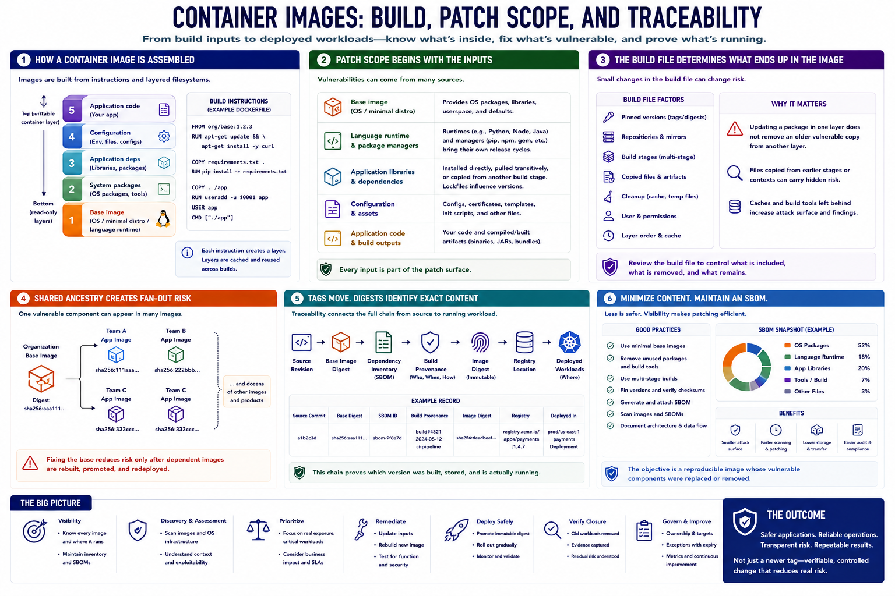

Container Image Layers and Patch Scope
Connecting to LMS... Progress: in progress

Narration
A container image is assembled from build instructions and filesystem layers. The base image may provide an operating system, a minimal distribution, or a language-specific runtime. Later layers add packages, application dependencies, configuration, and code.
Patch scope begins with those inputs. Operating-system packages may be inherited from the base. Language runtimes and package managers introduce their own release cycles. Application libraries can be installed directly, pulled transitively, or copied from another build stage.
The container build file defines how the artifact is created. Pinning, repository configuration, build stages, copied files, and cleanup all affect what remains in the final image. Updating a package in one layer does not help if an older vulnerable copy is still present elsewhere.
Shared ancestry creates fan-out. Many teams may build from the same organization base image or dependency set, so one vulnerable component can appear in dozens of application images. A base-image fix reduces risk only after dependent images are rebuilt, promoted, and redeployed.
Tags can move, while digests identify exact image content. Patch records should connect source revision, base digest, dependency inventory, build provenance, image digest, registry location, and deployed workload. This chain lets teams prove which version is actually running.
Minimize image contents and maintain a software bill of materials to make scope visible. Removing unused tools and packages reduces both attack surface and remediation workload. The objective is not simply a newer tag; it is a reproducible image whose vulnerable components were replaced or removed.